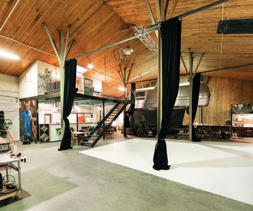

Interested in studio rental?
THE AIRSTREAM
We have just started the renovate this old American classic. It will function as a rolling music studio and camper wagon for the musicians Fricky and Cleo.
The white cyclorama wall measures 5x8 meters and have a shooting distance of 8 meters. There is a truss in the roof for easy light rigging. The cozy areas (kitchen, loge, chill out area) and a make up table are included. We also have a 300mbit Wifi and 63 Amp power socket.
To rent:
- 4 dress horses
- Steamer
- Lights (Will send specifics in email)
Additional services
If you want help with catering, rigging or building – don't hesitate to contact us. It can be solved for an extra cost. There is also a possibility to rent lightning equipment. The cyclorama wall can be painted green (greenscreen) for an extra fee.
The Studio is seated at Slakthusområdet (Hallvägen 28/32) and is open everyday in the week.
For more information, contact guldfabrikenab@gmail.com or answer our requst form to the left.We are Tage, Nils and Toft. Brothers from Umeå.
To make things happen is our profession. Nils comes from the art world, Tage from the movie making business and Toft is a car mechanic and chef.
Together we created Guldfabriken wich serves as a platform for all our creative skills. Mainly our little factory produces sets and props for film and television but we also do all kinds of other projects like music events, screenings, car renovations, furniture building etc.